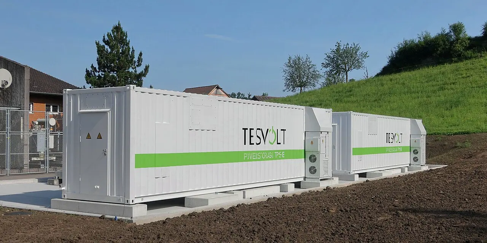

현재 월가가 크게 주목하는 테마는 여전히 인공지능, 반도체, 데이터센터, 전력 수요입니다. 그런데 10년 단위로 보면 더 조용한 곳에 다음 성장축이 있습니다. 바로 장주기 에너지저장과 전력망 지능화입니다. 이름은 화려하지 않지만, 앞으로 전력 수요가 늘수록 가장 먼저 한계가 드러나는 곳은 전기를 만드는 장비가 아니라 전기를 저장하고, 옮기고, 측정하고, 제어하는 전력망입니다.
이 테마가 덜 주목받는 이유도 분명합니다. 데이터센터 GPU처럼 실적 발표 때 숫자가 한 번에 폭발하지 않습니다. 전력망은 규제, 유틸리티 예산, 지방정부 허가, 장비 납기, 공사 인력, 장기 계약이 얽혀 느리게 움직입니다. 하지만 바로 그 느림이 10년짜리 기회를 만들 수 있습니다. 급한 수요가 느린 인프라를 만나면 병목이 생기고, 병목은 오랫동안 가격 결정력을 만듭니다.
독자가 지금 궁금해해야 할 질문은 “AI 다음 테마가 무엇인가”가 아닙니다. 더 좋은 질문은 “AI와 전기화가 만든 전력 수요를 실제로 받아낼 회사가 어디인가”입니다. 그 답은 배터리 저장장치, 스마트미터와 전력 데이터, 송배전 공사, 유틸리티 장비로 나뉩니다. 그래서 이번 글에서는 FLNC, ITRI, PWR, HUBB를 한 묶음으로 놓고 봅니다. 이 네 종목은 모두 같은 전력망 문제를 다른 층에서 해결합니다.
왜 이 테마는 아직 조용하게 보이나요

전력망 지능화가 조용한 이유는 투자자의 시선과 산업의 시간표가 다르기 때문입니다. 주식시장은 분기 매출과 가이던스를 좋아합니다. 반면 전력망 투자는 3년, 5년, 10년 단위로 움직입니다. 송전선 하나를 늘리려면 계획, 허가, 토지, 장비, 인력, 규제 승인까지 지나야 합니다. 저장장치도 배터리 가격만 내려간다고 바로 큰 이익이 나는 구조가 아닙니다. 프로젝트 수익성, 보증, 소프트웨어 제어, 전력시장 규칙이 같이 맞아야 합니다.
그래서 이 테마는 언뜻 답답해 보입니다. 하지만 전기 수요가 계속 늘어난다면 답답한 산업이 오히려 장기 병목이 됩니다. 국제에너지기구는 전력망 투자가 에너지 전환과 전력 안보의 핵심이라고 반복해서 지적해 왔습니다. 전력망을 제때 보강하지 못하면 재생에너지 발전소를 지어도 전기를 보내지 못하고, 데이터센터를 지어도 연결 대기 시간이 길어집니다. 결국 발전량보다 전력망 수용 능력이 더 중요한 순간이 옵니다.
여기서 장주기 에너지저장은 단순 배터리 이야기가 아닙니다. 낮에 남는 태양광, 밤에 부는 풍력, 피크 시간대 데이터센터 수요, 폭염과 한파 때의 전력 부족을 연결하는 완충 장치입니다. 4시간짜리 저장장치만으로는 하루 이상 지속되는 수급 불균형을 해결하기 어렵습니다. 그래서 8시간, 12시간, 24시간 이상 버티는 장주기 저장과 전력망 제어 소프트웨어가 함께 중요해집니다.
10년 성장 논리는 전력 수요보다 유연성 부족에서 나옵니다
관련 영상
장주기 에너지 저장 LDES 시장 변화와 투자 전략
전력 수요가 늘어난다는 말은 이미 많이 나왔습니다. 그러나 진짜 투자 포인트는 수요 증가 그 자체보다 유연성 부족입니다. 발전소는 한 번에 전기를 만들고, 수요는 시간대별로 흔들립니다. 재생에너지는 날씨에 따라 변하고, 데이터센터는 안정적인 전력을 계속 요구합니다. 이 간격을 줄이지 못하면 전력망은 더 비싼 예비 발전, 더 많은 송전 투자, 더 잦은 제한 송전으로 대응해야 합니다.
미국 에너지부의 장주기 에너지저장 자료는 이 산업을 단순한 보조 기술이 아니라 전력 시스템 신뢰도와 비용 절감의 축으로 봅니다. 중요한 대목은 저장장치가 발전소를 대체한다는 말이 아니라, 전력망이 더 많은 재생에너지와 변동 수요를 흡수하도록 시간을 벌어준다는 점입니다. 전력망이 막히면 발전소와 데이터센터 모두 제 속도를 내지 못합니다.
이 테마는 하나의 종목으로 끝나지 않습니다. 저장장치를 설치하는 회사가 필요하고, 전력 사용량과 부하를 실시간으로 읽는 계량·데이터 회사가 필요합니다. 실제 송전선과 변전소를 짓는 시공사가 필요하고, 유틸리티가 쓰는 배전 장비와 보호 장치도 필요합니다. 그래서 장주기 에너지저장과 전력망 지능화는 “배터리 주식 하나”가 아니라 전력망 운영체제 전체에 가까운 테마입니다.
관련종목은 전력망의 서로 다른 층을 맡고 있습니다
플루언스 에너지는 저장장치와 에너지 관리 소프트웨어를 봐야 하는 회사입니다. ESS 시장이 커질수록 단순 배터리 셀보다 프로젝트 설계, 통합, 보증, 제어 소프트웨어가 중요해집니다. 플루언스를 볼 때는 매출 성장률보다 수주잔고의 질, 프로젝트 매출총이익률, 현금흐름, 소프트웨어 반복 매출 비중을 확인해야 합니다. ESS는 성장 시장이지만, 프로젝트 원가와 보증 부담을 잘못 관리하면 매출이 늘어도 주주에게 남는 돈은 약해질 수 있습니다.
아이트론은 전력망을 읽는 회사로 봐야 합니다. 아이트론의 2026년 1분기 발표에서 매출은 5억8,700만 달러였고, 회사는 Outcomes 매출이 증가했다고 설명했습니다. 여기서 중요한 것은 스마트미터가 단순 계량기가 아니라 유틸리티가 수요를 읽고, 요금을 설계하고, 장애를 줄이고, 전력망 자산을 관리하는 데이터 단말이 된다는 점입니다. 전력망 지능화는 센서와 데이터 없이 작동하지 않습니다.
콴타 서비스는 전력망을 실제로 짓는 쪽입니다. 콴타 서비스의 실적 발표 자료를 볼 때는 전력 인프라 수요가 백로그와 현장 실행으로 이어지는지를 봐야 합니다. 송전선, 변전소, 재생에너지 연결, 유틸리티 현대화는 계획만으로 끝나지 않습니다. 현장에서 시공할 인력과 장비를 가진 회사가 병목을 쥐게 됩니다.
허벨은 유틸리티 장비와 전기 부품 층에서 봐야 합니다. 허벨의 실적 발표 자료에서 투자자가 확인할 것은 유틸리티 솔루션 수요, 가격 유지력, 전기 장비 마진입니다. 전력망 확충은 화려한 신기술만으로 되지 않습니다. 절연체, 커넥터, 보호 장비, 배전 장치처럼 지루하지만 반드시 필요한 부품이 쌓여야 합니다. 이런 회사는 성장률이 폭발적이지 않아도 긴 투자 사이클에서 꾸준한 수요를 받을 수 있습니다.
| 종목 | 맡는 층 | 좋아지는 조건 | 반드시 볼 지표 |
|---|---|---|---|
| FLNC 플루언스 에너지 | ESS 통합·소프트웨어 | 저장장치 프로젝트가 수익성 있는 반복 수주로 바뀝니다 | 수주잔고, 매출총이익률, 현금흐름 |
| ITRI 아이트론 | 스마트미터·전력 데이터 | 유틸리티가 수요관리와 장애 대응 투자를 늘립니다 | Outcomes 매출, 반복 매출, 잉여현금흐름 |
| PWR 콴타 서비스 | 송배전 시공·현장 실행 | 전력망 보강 계획이 실제 공사 백로그로 들어옵니다 | 백로그, 전력 인프라 매출, 마진 |
| HUBB 허벨 | 유틸리티 장비·배전 부품 | 전력망 현대화가 장비 교체와 가격 유지로 이어집니다 | 유틸리티 솔루션 수요, 가격, 영업마진 |
이 테마는 매출보다 수주잔고와 현금흐름이 먼저입니다
장주기 에너지저장과 전력망 지능화는 좋은 이야기만으로 투자하면 위험합니다. 이 산업은 프로젝트형 매출이 많고, 원자재와 인건비와 납기가 수익성을 흔듭니다. 따라서 첫 번째 확인 지표는 수주잔고입니다. 수주잔고가 늘어도 낮은 마진 계약이면 의미가 약합니다. 두 번째는 매출총이익률입니다. 전력망 장비와 ESS 프로젝트는 보증, 설치, 원가 상승이 실적을 갉아먹을 수 있습니다.
세 번째는 현금흐름입니다. 장기 성장 산업이라도 운전자본을 계속 먹으면 주주 입장에서는 기다림이 길어집니다. 특히 ESS 회사는 프로젝트 납기와 보증 조건에 따라 현금이 늦게 들어올 수 있습니다. 전력망 시공사는 백로그가 많아도 인력과 장비 비용을 통제해야 합니다. 장비 회사는 가격 인상으로 원가 상승을 넘길 수 있는지가 중요합니다.
네 번째는 규제와 유틸리티 예산입니다. 전력망은 민간 소비재와 다르게 고객의 예산 승인과 요금 규제에 영향을 받습니다. 정부가 전력망 투자를 장려해도 실제 발주는 주별 규제, 유틸리티 투자계획, 지역 주민 반대, 공급망 상황에 따라 느려질 수 있습니다. 이 점 때문에 테마가 맞아도 종목의 실적 반영은 한 박자 늦을 수 있습니다.
그래서 투자자는 이 테마를 단기 급등주처럼 보면 안 됩니다. 좋은 접근은 “10년짜리 병목을 1년 단위 숫자로 검증한다”는 방식입니다. 올해는 수주잔고가 늘어나는지, 내년에는 마진이 지켜지는지, 그 다음에는 현금흐름이 좋아지는지 보는 식입니다. 이 흐름이 이어질 때 조용한 테마가 진짜 장기 테마로 바뀝니다.
가장 큰 리스크는 기술보다 실행입니다
이 테마의 가장 큰 리스크는 기술 실패만이 아닙니다. 오히려 실행 리스크가 더 큽니다. 장주기 저장은 경제성이 맞아야 하고, 전력망 공사는 허가와 인력이 필요하며, 스마트미터는 유틸리티 고객의 교체 주기를 기다려야 합니다. 허벨 같은 장비 기업도 유틸리티 주문이 늦어지면 실적이 흔들릴 수 있습니다. 전력망은 반드시 필요하지만, 반드시 빠르게 진행된다는 뜻은 아닙니다.
또 하나의 리스크는 시장이 너무 빨리 기대를 당겨오는 경우입니다. 아직 매출과 현금흐름이 검증되지 않았는데 “AI 전력 수요 수혜”라는 이름만으로 주가가 먼저 오르면, 이후 실적 확인 과정에서 되돌림이 클 수 있습니다. 특히 저장장치 기업은 프로젝트 수익성이 약하면 테마가 맞아도 주가는 힘을 잃을 수 있습니다.
그럼에도 이 테마를 10년 후보로 보는 이유는 수요의 방향이 비교적 분명하기 때문입니다. AI 데이터센터, 전기차 충전, 재생에너지 확대, 냉난방 전기화, 제조업 리쇼어링은 모두 전력망에 부담을 줍니다. 전기를 더 만드는 것만으로는 부족합니다. 전기를 저장하고, 어디가 부족한지 읽고, 공사를 실행하고, 장비를 교체해야 합니다. 이 네 가지가 동시에 필요해지는 산업은 생각보다 많지 않습니다.
결론은 단순합니다. 월가가 가장 크게 보는 것은 여전히 AI와 반도체입니다. 하지만 AI가 실제 경제에서 계속 커지려면 전력망이 먼저 버텨야 합니다. 장주기 에너지저장과 전력망 지능화는 아직 덜 화려하지만, 향후 10년 동안 가장 현실적인 병목 해결 테마 중 하나입니다. 독자가 다음 큰 테마를 찾는다면, 이미 밝게 빛나는 화면보다 그 화면 뒤에서 전기를 버티게 하는 저장장치, 데이터, 공사, 장비를 봐야 합니다.